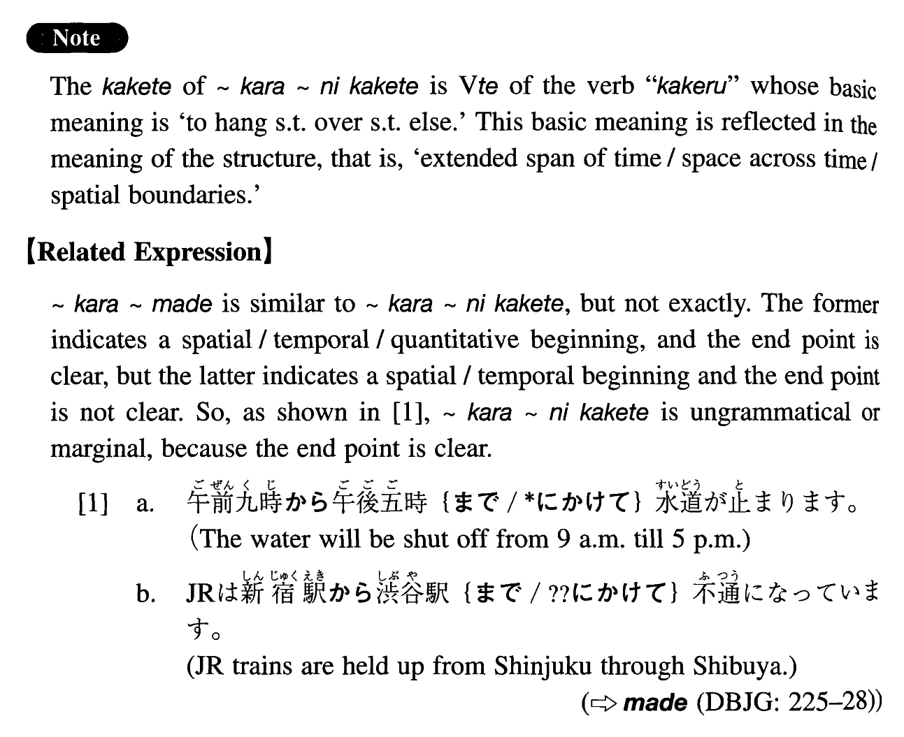

←
DoJG
→
から~にかけて
(I. 101)
Example sentences
(ks).
今年の夏、七月
から
八月
にかけて
中国大陸を旅行した。
This summer I travelled on the Chinese continent from July through August.
(a).
今週は木曜
から
金曜
にかけて
雪が降るでしょう。
This week it will probably snow from Thursday through Friday.
(b).
日本は六月
から
七月
にかけて
梅雨が続く。
In Japan the rainy season continues through June and July.
(c).
高気圧が朝鮮半島
から
九州
にかけて
張り出している。
High atmospheric pressure extends from the Korean Peninsula up through Kyushu.
Formation
Noun
から
Noun
にかけて
一月
から
二月
にかけて
From January through February
